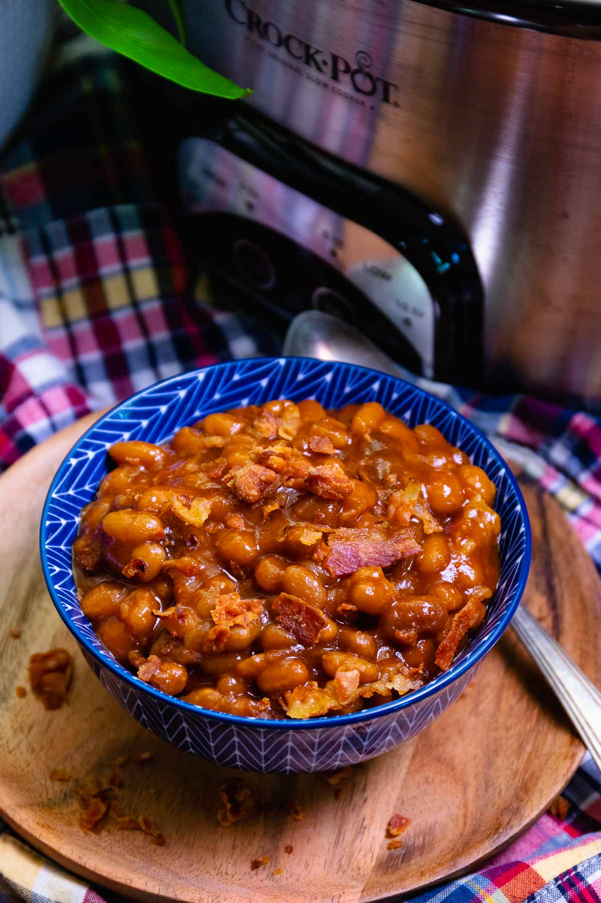

Baked Beans

Description
If you’re looking for a side dish that will make your mouth water and your belly happy, you gotta try these Crock Pot Baked Beans.
These beans are so good, you’ll want to lick the bowl clean! They have everything you need: sweetness, smokiness, savoriness, spiciness, and tanginess. And they are super easy to make: just throw some stuff in the slow cooker and let it do its thing. You can also tweak them however you like: add more heat, meat, or cheese. They are great for any occasion - whether you’re having a cookout, a picnic, or a family reunion.
Ingredients
- 2 28oz cans baked beans
- ¾ cup ketchup
- ½ cup of your favorite BBQ sauce
- ¼ cup brown sugar
- 2 tablespoons honey
- 1 tablespoon yellow mustard
- 1 tablespoon Worcestershire sauce
- ¼ teaspoon garlic powder
- 5 slices bacon – roughly chopped
- ½ cup finely chopped onion
Instructions
- In a large bowl, combine beans, ketchup, BBQ sauce, sugar, honey, mustard, Worcestershire sauce, onion, bacon, and garlic powder. Mix well.
- Transfer the bean mixture to the slow cooker and cover with the lid.
- Cook on low for 5 to 6 hours or on high for 3 to 4 hours, until the beans are soft and bubbly.
- Sprinkle some extra bacon on top if you like.